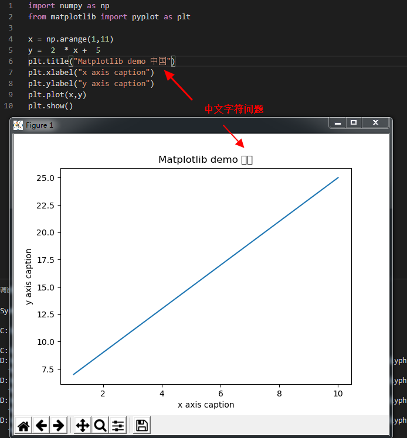

Matplotlib学习
简介
Matplotlib 是 Python 的绘图库。 它可与 NumPy 一起使用，提供了一种有效的 MatLab 开源替代方案。 它也可以和图形工具包一起使用，如 PyQt 和 wxPython。
Matplotlib 是什么？
Matplotlib 是一个 Python 的 2D绘图库，它以各种硬拷贝格式和跨平台的交互式环境生成出版质量级别的图形。
为什么选择 Matplotlib？
如果某天你发现自己要学习 Matplotlib, 很可能是因为: 1、Matplotlib 是一个非常强大的 Python 画图工具；2、手中有很多数据, 可是不知道该怎么呈现这些数据。
Matplotlib 能帮你？
绘制线图、散点图、等高线图、条形图、柱状图、3D 图形、、甚至是图形动画等等。
安装
#安装
pip install matplotlib
#验证安装,是否输出matplotlib (版本号)
pip list | grep matplotlib
常见问题
中文字符问题

Matplotlib 默认情况不支持中文，我们可以使用以下两种简单的方法来解决：
1、首先下载字体（注意系统）：https://www.fontpalace.com/font-details/SimHei/
SimHei.ttf 文件放在当前执行的代码文件中：
import numpy as np
from matplotlib import pyplot as plt
import matplotlib
# fname 为 你下载的字体库路径，注意 SimHei.ttf 字体的路径
zhfont1 = matplotlib.font_manager.FontProperties(fname="SimHei.ttf")
x = np.arange(1,11)
y = 2 * x + 5
plt.title("菜鸟教程 - 测试", fontproperties=zhfont1)
# fontproperties 设置中文显示，fontsize 设置字体大小
plt.xlabel("x 轴", fontproperties=zhfont1)
plt.ylabel("y 轴", fontproperties=zhfont1)
plt.plot(x,y)
plt.show()
2、我们还可以使用系统的字体
from matplotlib import pyplot as plt
import matplotlib
a=sorted([f.name for f in matplotlib.font_manager.fontManager.ttflist])
for i in a:
print(i)
打印出你的 font_manager 的 ttflist 中所有注册的名字，找一个看中文字体例如：STFangsong(仿宋）,然后添加以下代码即可：
plt.rcParams['font.family']=['STFangsong']
NumPy
简介
NumPy(Numerical Python) 是 Python 语言的一个扩展程序库，支持大量的维度数组与矩阵运算，此外也针对数组运算提供大量的数学函数库。
NumPy 的前身 Numeric 最早是由 Jim Hugunin 与其它协作者共同开发，2005 年，Travis Oliphant 在 Numeric 中结合了另一个同性质的程序库 Numarray 的特色，并加入了其它扩展而开发了 NumPy。NumPy 为开放源代码并且由许多协作者共同维护开发。
NumPy 是一个运行速度非常快的数学库，主要用于数组计算，包含：
一个强大的N维数组对象 ndarray
广播功能函数
整合 C/C++/Fortran 代码的工具
线性代数、傅里叶变换、随机数生成等功能
django